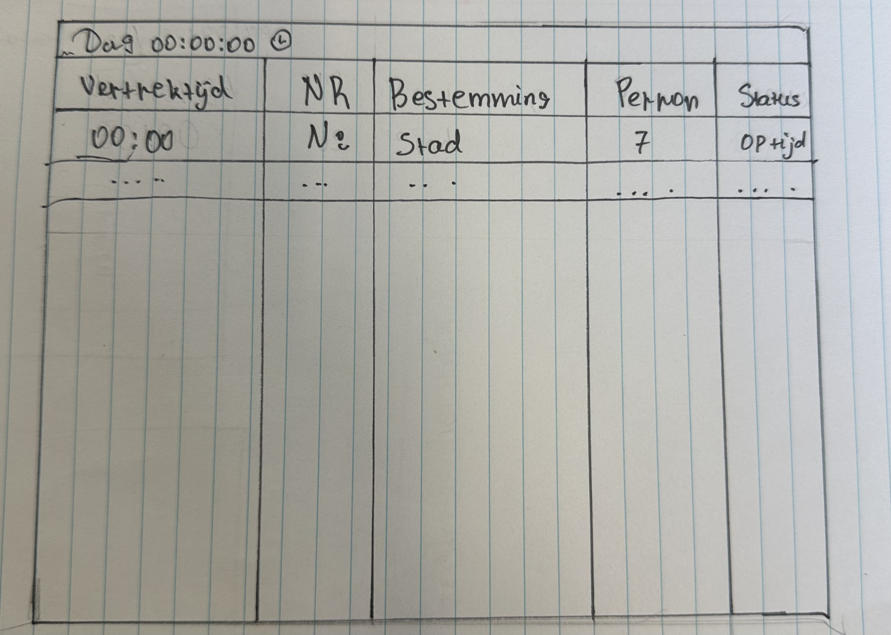

Fakashchuk Diana 1GDM2
Week 1
Introductie en schetsen
Ik ben gestart met het bekijken en analyseren van stationsschermen uit verschillende landen . Daarbij focuste ik op zaken zoals kleurgebruik, indeling, typografie, informatiehiërarchie en iconen . Tijdens dit proces dacht ik al na over hoe deze inzichten konden worden toegepast in mijn eigen ontwerp.
Daarna heb ik snelle ruwe schetsen gemaakt om ideeën te verkennen en vast te leggen. Tot slot heb ik de beste elementen uit deze schetsen samengevoegd en verfijnd, en uitgewerkt tot een duidelijke en verzorgde eindschets.
Overzichtsscherm

Schetsen overzichtsscherm
Ik heb een schets getekend van een overzichtsscherm. Het scherm toont geplande ritten per dag met informatie zoals vertrektijd, nummer, bestemming en status.
Het doel van de schets is om in één oogopslag inzicht te geven in de planning en snel meer informatie te kunnen zien.
Perronscherm

Schetsen Perronscherm
Dit is een schets van een perronbord. Ik heb het getekend om later in Figma uit te werken. De schets toont het perronnummer, de vertrektijd en de bestemming. De lijn met een pijl geeft de route van de trein aan en de stippen stellen de tussenstops voor.
Onderaan staan meerdere regels met dezelfde route maar met verschillende tijden. De haak rechts laat zien dat deze informatie telkens hetzelfde is.
Wagonscherm
Schetsen Wagonscherm
Ik heb een schema van een informatiebord voor een trein getekend. Het toont rijtuigen A–E, hun klasse (1 of 2) en voorzieningen zoals wifi, een familierijtuig met babyzone, fietsplaatsen, toegankelijkheid voor mindervaliden en toiletten.
Het schema is bedoeld om reizigers snel te helpen oriënteren en het juiste rijtuig te vinden.
Eindstand
De schetsen zijn op dit moment vooral conceptueel en daardoor nog niet meteen duidelijk voor de gebruiker. Omdat er nog geen labels en teksten zijn toegevoegd, is de informatie soms moeilijk te begrijpen. Daarom is de volgende stap om het ontwerp digitaal uit te werken, zodat ik de duidelijkheid en gebruiksvriendelijkheid kan verbeteren en verder kan spelen met opbouw, vormgeving en details.